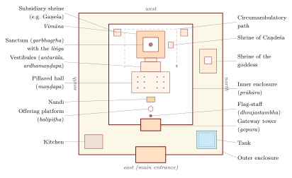

Chapter 11: Temple Worship and Sacred Architecture¶
11.1 Introduction: The Temple as Cosmos¶
In Āgamic thought the temple (ālaya, devālaya, prāsāda, vimāna) is not merely a building in which worship takes place. It is the dwelling and the body of the deity, a constructed image of the cosmos laid out on a sacred diagram, and the place in which the deity, installed by consecration, receives daily worship as a living presence. Much of the kriyāpāda of the Āgamas, and a large technical literature on architecture and image-making (vāstu- and śilpaśāstra, such as the Mayamata and Mānasāra), deals with temple building (Kramrisch 1946; Davis 1991).
11.2 The Vāstupuruṣa Maṇḍala¶
The plan of a temple is generated from the vāstupuruṣamaṇḍala, the square grid in which the “Person of the Site” lies face down, pinned by the deities of the grid, with Brahmā at the centre (Chapter 8). The sanctum is placed over the central “place of Brahmā” (brahmasthāna), and subsidiary shrines, halls and gates are related to the grid. The texts also associate the directions with particular functions: the main entrance is usually on the east, towards the rising sun; the north-east, the auspicious quarter of Īśāna, is the place for water; the south-east, the quarter of Agni, for fire and often the kitchen; the south-west for heavy structures and storage; and the north-west for subsidiary buildings.
Modern popular “vāstu” that claims magnetic or “energy” effects for these prescriptions goes well beyond the classical texts and has no scientific basis.
11.3 The Principal Parts of a Temple¶
A large South Indian temple consists of nested enclosures (prākāras) with the principal shrine at the centre (Figure 11.1). The main image or liṅga stands in a small, dark sanctum, the “womb-house” (garbhagṛha), which is reached through one or more vestibules (antarāla, ardhamaṇḍapa) from pillared halls (maṇḍapas) used for worship, music, dance and festivals. In South Indian usage the vimāna is the sanctum together with its superstructure, rising in tiers and crowned by a cupola (śikhara) and finial (stūpi); it is identified with the cosmic mountain Meru. Gateway towers (gopuras) pierce the enclosure walls, and from the twelfth century onwards in Tamil Nadu they came to dwarf the central vimāna. On the main axis before the sanctum stand the flag-staff (dhvajastambha) and the offering platform (balipīṭha), with the deity’s mount (in a Śiva temple, the bull Nandi) facing the shrine; the temple tank (puṣkariṇī) lies within or beside the enclosures.

11.4 Consecration (Pratiṣṭhā)¶
Through consecration the image is transformed from stone or metal into the seat of the deity. The rites extend over several days. The site, the image and the officiants are purified; the eyes of the image are “opened” (netronmīlana); the image is laid to “sleep” in water, in grain and on a couch (adhivāsa); fire offerings are made in a pavilion with several fire-pits; the deity’s mantras are installed on the image (nyāsa) and the deity is transferred into it from consecrated pots; and the rite culminates in a bathing with the consecrated water, the kumbhābhiṣeka described in Section 9.6.
Once consecrated, the image must receive regular worship; interruption of worship requires expiation and, in serious cases, reconsecration (Davis 1991).
11.5 Images and Their Proportions¶
11.5.1 Materials¶
The fixed image in the sanctum is usually of stone (śilā) — granite in much of South India, sandstone in the North — while processional images are of metal (loha); the texts speak of “five metals” (pañcaloha), but South Indian “bronzes” are in practice mainly copper alloys. Some traditions use wood (dāru), notably for the images of Jagannātha at Purī, which are periodically renewed; small liṅgas and images may be of crystal or gems; and clay (mṛd) serves for temporary festival images, as in Bengal.
11.5.2 Proportional Systems (Tālamāna)¶
The Āgamas and śilpa texts prescribe proportional systems for images, based on a module, the tāla (roughly the length of the face). Higher deities are made to longer proportions: the principal gods often to ten tālas, goddesses and lesser deities to nine or eight, human figures to fewer. Different texts give different schemes, and the measurements of surviving images vary (Rao 1914–1916). Defects in an image are held to make it unfit for worship.
11.6 Temple Plans and Types¶
The construction of a temple involves examination and choice of the site (bhūparīkṣā), for which the texts prescribe tests of the soil’s colour, smell and taste and of a refilled pit; orientation by means of a gnomon (śaṅku) and its shadows; drawing of the grid; and derivation of the dimensions of all parts from a basic module.
The South Indian texts distinguish three types of superstructure by the shape of its crowning element: square (nāgara), octagonal (drāviḍa) and circular or apsidal (vesara). Modern art historians use the same terms differently, for the North Indian temple with curvilinear tower (Nāgara), the South Indian temple with stepped pyramidal vimāna (Drāviḍa), and hybrid Deccan forms (Vesara).
The texts expect the architect-sculptor (sthapati) who translates the diagram into stone to be learned in the śāstras, skilled in drawing, mathematics and sculpture, and of good character; the craft has largely been transmitted in hereditary families of the Viśvakarma communities. In the twentieth century V. Ganapati Sthapati (1927–2011), who long headed the Government College of Architecture and Sculpture at Māmallapuram, was a leading figure in the revival of traditional temple architecture in South India and abroad.
| Modern stylistic term | Features and examples |
|---|---|
| Nāgara | Curvilinear tower (śikhara); North and East India; Khajurāho, Liṅgarāja at Bhubaneswar |
| Drāviḍa | Stepped pyramidal superstructure; South India; Bṛhadīśvara at Thanjavur |
| Vesara | Mixed forms of the Deccan; later Chālukya and Hoysaḷa temples |
| Kerala | Square, circular or apsidal shrines with tiered sloping roofs clad in copper or tiles |
11.7 The Historical Development of the Temple¶
Freestanding stone temples appear in India from about the fifth century CE, in the Gupta period, roughly when the earliest surviving Tantric scriptures were composed. The growth of temple architecture over the following centuries parallels the rise of Āgamic worship:
| Period | Region and dynasty | Examples and developments |
|---|---|---|
| 5th–6th c. | Gupta, North India | Small flat-roofed shrines and early towered temples, such as the Daśāvatāra temple at Deogarh |
| 6th–8th c. | Chālukya, Deccan | Experimental temples at Aihole, Bādāmi and Paṭṭadakal, in both northern and southern styles |
| 7th–9th c. | Pallava, Tamil country | Rock-cut shrines and monolithic rathas at Māmallapuram; the Shore temple; the Kailāsanātha temple at Kāñcīpuram |
| 8th c. | Rāṣṭrakūṭa | The Kailāsa temple at Ellora, carved from the living rock |
| 10th–13th c. | Chōḷa | Bṛhadīśvara at Thanjavur (c. 1010) and Gaṅgaikoṇḍacōḷapuram; classic bronzes; growth of enclosures and gateways |
| 10th–13th c. | North and East India | Khajurāho; Bhubaneswar; Koṇārka |
| 14th–17th c. | Vijayanagara and Nāyaka | Vast enclosures, halls and towering gopuras; much of Madurai and Śrīraṅgam in their present form |
Many surviving South Indian Āgamas and architectural treatises, such as the Mayamata, are later than the earliest monuments they appear to describe; the relation between text and building is one of mutual influence rather than of buildings simply realising earlier blueprints. Nor did architecture follow the texts slavishly: each region and period developed its own forms within the shared framework.
11.8 Vaiṣṇava Temples¶
Vaiṣṇava temples of South India are governed either by the Pāñcarātra (for example Śrīraṅgam, the Varadarāja temple at Kāñcīpuram and Melkote) or by the Vaikhānasa Āgama (for example Tirumala-Tirupati); see Chapter 3. In Śrīvaiṣṇava theology the consecrated image (arcā) is the most accessible of the Lord’s five modes of presence. Piḷḷai Lokācārya’s Śrīvacanabhūṣaṇa teaches that the qualities of the Lord’s love for devotees (vātsalya), lordship (svāmitva), gracious condescension (sauśīlya) and accessibility (saulabhya) are most fully manifest in the image, in which the Lord makes himself dependent on his worshippers.
11.9 Festivals (Utsava)¶
The great festival (mahotsava, brahmotsava), usually of seven to eleven days, begins with the hoisting of the flag (dhvajārohaṇa), brings the deity out in daily processions on different mounts and culminates in a chariot procession and a ritual bath. In the chariot festival (rathotsava) the deity is drawn through the streets in a great wooden car, as at Purī and Tiruvārūr; in the float festival (teppotsava) it is floated on a raft in the temple tank; and in the divine marriage (kalyāṇotsava) it is wedded to its consort, as in the Cittirai festival of Mīnākṣī and Sundareśvara at Madurai.
11.9.1 Festivals and Social Conflict¶
Temple festivals display the social order of the community that celebrates them: who pulls the chariot, who carries the image, who receives honours and consecrated food, and in what order, are matters of precedence, and they have often been contested. In colonial and modern South India, disputes between castes over the right to take part in processions, to have the deity’s chariot pass through their streets or to receive temple honours have repeatedly led to litigation and, at times, to violence; Dalit communities in particular have campaigned for the right to participate on equal terms. Arjun Appadurai, Fuller and others have shown that such conflicts are not aberrations but part of how temples have long functioned as arenas of status and authority (Appadurai 1981; Fuller 2003).
11.10 Priests¶
11.10.1 Qualifications, Heredity and Caste¶
In South India, worship in Śaiva Āgamic temples is performed by hereditary ādiśaiva (Tamil civācāriyār) priests and in Vaiṣṇava temples by bhaṭṭācāryas of the Pāñcarātra or Vaikhānasa lineages. Priests are trained in the Āgamic manuals, Sanskrit and Vedic recitation, and receive the initiations and consecrations that entitle them to touch the image. The hereditary and caste-restricted character of the priesthood, though defended by many as an Āgamic requirement, is not found in the earliest scriptures, which open initiation more widely, and it has been challenged by legislation and litigation. Tamil Nadu legislated in 1970 and again in 2006 to allow trained persons of any caste to be appointed as temple priests; the Supreme Court in 2015 upheld the principle while requiring appointments to conform to the Āgamas of each temple, and the state began appointing non-Brahmin priests trained in its Āgama schools in 2021. The debate shows that “what the Āgamas say” about access is itself a matter of interpretation. C.J. Fuller’s classic ethnography of the priests of the Mīnākṣī temple at Madurai (Fuller 1984), and his later study of the reform of their training (Fuller 2003), describe how the status and education of the ādiśaiva priests changed in the twentieth century.
11.10.2 Music and Recitation¶
Music is part of worship itself. In Tamil temples the nākasuram (nāgasvaram, a large double-reed instrument) and the tavil (barrel drum) are the auspicious instruments (maṅgalavādya) that accompany processions and the main services; particular rāgas are customarily associated with particular times of day, a convention of performers rather than a prescription of the Āgamas. In Kerala the pañcavādya (“five instruments”) ensembles play for processions, and sopāna singing is performed at the steps of the sanctum. Beside the Sanskrit liturgy, Tamil hymns are sung: the Āḻvār hymns are recited in Vaiṣṇava temples (Chapter 3), and in Śaiva temples hereditary singers (ōtuvārs) perform the Tēvāram, the hymns of the three principal Nāyaṉmār poets, Campantar, Appar (Tirunāvukkaracar) and Cuntarar, composed between the seventh and ninth centuries and set to Tamil melodic modes (paṇ). According to a later tradition, the hymns were recovered from a locked room in the Chidambaram temple by Nampi Āṇṭār Nampi at the behest of a Chōḷa king, often identified with Rājarāja I, whose inscriptions do record the endowment of hymn-singers at Thanjavur. The joining of vernacular devotional poetry to a Sanskrit Āgamic liturgy, which these singers embody, distinguishes the Tamil temples from most others in India (Peterson 1989).
11.10.3 Temple Women and Their Abolition¶
Medieval inscriptions, such as those of Rājarāja I at Thanjavur, record large numbers of women attached to temples as dancers and ritual performers. In the colonial period the institution of “devadāsīs”, women dedicated to temple deities, came to be associated with concubinage and exploitation, and after a long reform campaign it was abolished in the Madras Presidency by the Devadasis (Prevention of Dedication) Act of 1947. Recent scholarship stresses both the exploitation the system entailed and the loss of the women’s artistic heritage, much of which was appropriated in the twentieth-century reconstruction of dance as “Bharatanāṭyam”.
11.11 Some Living Temples¶
11.11.1 Chidambaram¶
The Naṭarāja temple at Chidambaram is among the most sacred Śaiva sites of Tamil Nadu. Its hereditary priests, the Dīkṣitars, follow not the Śaiva Āgamas but a Vedic-style liturgy ascribed to Patañjali. The temple’s gateway towers bear reliefs of the 108 dance poses (karaṇas) of the Nāṭyaśāstra. Control of its administration has been contested between the Dīkṣitars and the Tamil Nadu government in a long series of court cases.
11.11.2 Tirumala-Tirupati¶
The Veṅkaṭeśvara temple at Tirumala, one of the most visited pilgrimage sites in the world, follows the Vaikhānasa Āgama and is administered by the statutory Tirumala Tirupati Devasthanams.
11.11.3 Madurai¶
The Mīnākṣī–Sundareśvara temple at Madurai, largely in its present form from the Nāyaka period (16th–17th centuries), has fourteen gateway towers, the tallest about fifty metres high, a hall of a thousand pillars and the tank of the golden lotus. Its annual Cittirai festival celebrates the marriage of the goddess and Śiva. Fuller’s studies of its priests are a classic account of a living Āgamic temple (Fuller 1984, 2003).
11.11.4 Śrīraṅgam¶
The Raṅganātha temple at Śrīraṅgam, with its seven enclosures, is the principal seat of the Śrīvaiṣṇava tradition and was the base of Rāmānuja (Chapter 3).
11.11.5 North India and Kerala¶
The great temples of North and East India — Liṅgarāja at Bhubaneswar (11th century), the Khajurāho temples (10th–11th centuries), the Sun temple at Koṇārka (13th century) and the Jagannātha temple at Purī (12th century) — were not governed by the South Indian Āgamas. Their worship follows Purāṇic and regional ritual manuals and local priestly traditions; at many North Indian temples devotees may touch and themselves worship the image, which is unthinkable in a South Indian Āgamic sanctum.
Kerala, with its own Tantric temple ritual under hereditary tantrīs, is described in Section 13.2; its temple arts include the pañcavādya ensembles and the Pūram festivals with their processions of elephants.
11.12 The Temple as Body and Maṇḍala¶
Texts and commentators describe the temple as a body: the sanctum is the womb or heart, the superstructure the head, the finial the crown; the doors are its mouth, the enclosure walls its skin. The temple is at the same time the cosmic person and the mountain at the centre of the world. Stella Kramrisch’s The Hindu Temple (1946) showed how this symbolism, rooted in Vedic conceptions of the sacrificial altar and the cosmic person, is built into the geometry of the plan and the elevation (Kramrisch 1946). The homology allows temple worship and internal meditation to be understood as parallel practices (Chapter 2).
11.13 The Temple Kitchen and the Tank¶
Food offered to the deity (naivedya) is prepared in the temple kitchen (Tamil maṭappaḷḷi) by ritually pure cooks, according to prescribed recipes and timings, and distributed after offering as prasāda, the deity’s grace. Many temples are famous for particular offerings, such as the laḍḍu of Tirupati.
The temple tank serves for ritual bathing, provides water for worship and is the scene of the float festival. It is often consecrated as embodying sacred rivers. The water that has bathed the image (tīrtha) is distributed to devotees, who sip it and touch it to the head.
11.14 Administration and the State¶
Medieval temple inscriptions show temples managed by assemblies, trustees and royal officers, with large endowments of land and gold and staffs of priests, musicians, dancers, accountants, cooks, garland-makers and craftsmen (Sanderson 2009). Since the nineteenth century the administration of Hindu temples in much of South India has passed to the state: in Tamil Nadu the Hindu Religious and Charitable Endowments Department oversees tens of thousands of temples. State control has been defended as a safeguard against mismanagement and as a means of social reform, and criticised as interference in religion; its relation to the Āgamas remains a subject of litigation.
11.15 Renovation and Reconsecration¶
The Āgamas prescribe the renovation (jīrṇoddhāra) of temples and their reconsecration, conventionally about every twelve years, and after damage, pollution or interruption of worship. During renovation the divine presence is transferred to a temporary seat and then reinstalled through the rites of kumbhābhiṣeka (Chapter 9).